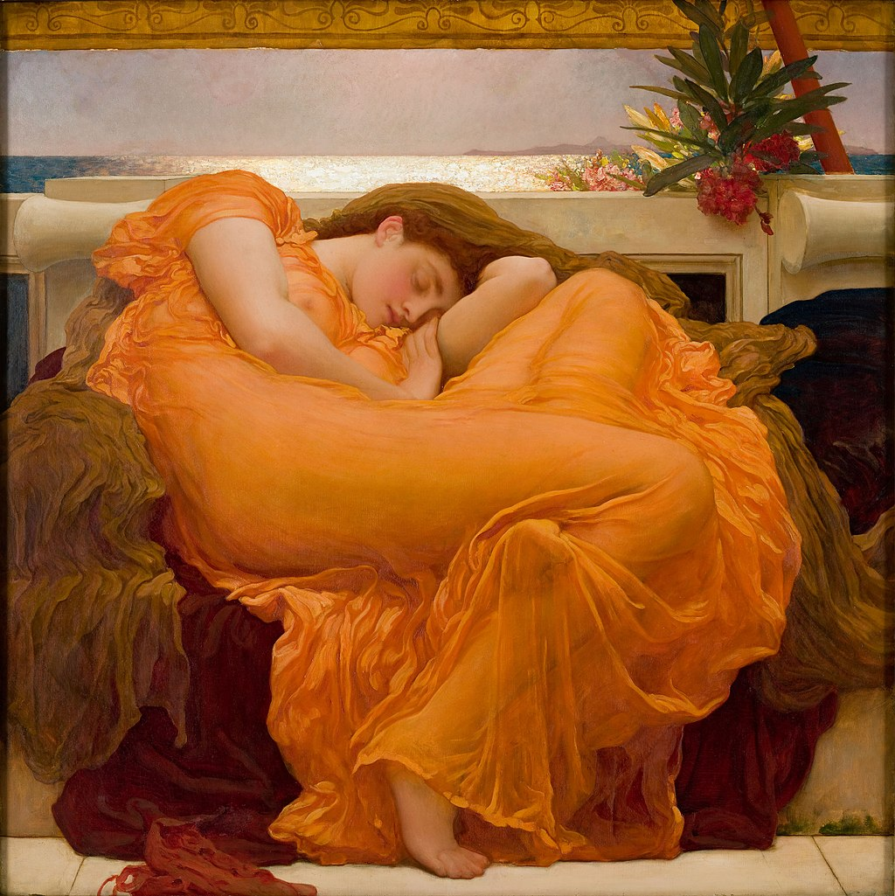

<head>
<meta charset="UTF-8" />
<meta name="keywords" content="drawing, painting" />
<meta name="description" content="drawings by Sunjy" />
<title>Sunjy</title>
<link rel="shortcut icon" type="image/x-icon" href="../../mImages/mCommon/favicon.ico" media="screen" />
<link rel="stylesheet" type="text/css" href="../../mCsses/mCommon/mCssA.css" />
<link rel="stylesheet" type="text/css" href="../../mCsses/mCommon/mCssB.css" />
<link rel="stylesheet" type="text/css" href="../../mCsses/mCommon/mCssC.css" />
<link rel="stylesheet" type="text/css" href="../../mCsses/mCommon/mCssD.css" />
<link rel="stylesheet" type="text/css" href="../../mCsses/mContent/mCssA.css" />
<link rel="stylesheet" type="text/css" href="../../mCsses/mContent/mCssB.css" />
<link rel="stylesheet" type="text/css" href="../../mCsses/mContent/mCssC.css" />
<link rel="stylesheet" type="text/css" href="../../mCsses/mContent/mCssD.css" />
</head>
<script type="text/javascript" src="../../mScripts/mContent/mContentAA.js" /></script>
<script type="text/javascript" src="../../mScripts/mContent/mContentAB.js" /></script>
<script type="text/javascript" src="../../mScripts/mContent/mContentAC.js" /></script>
<script type="text/javascript" src="../../mScripts/mContent/mContentAD.js" /></script>
<script type="text/javascript"></script> 
<script type="text/javascript">
document.write('<div class="mImgAbsolute"></div>');
/*
document.write('<p class="mFontSizeBColor" />From a white paper...</p>');
document.write('<table class="center"><tr><td>');
document.write('');
document.write('</td></tr></table>');
*/
</script>


<script type="text/javascript">
document.write('<p class="mFontSizeBColor" />Flaming June</p>');
document.write('<p class="mFontSizeSColor" />“Flaming June” by Frederic Leighton portrays a classical Greek figure of a sleeping maiden or nymph influenced by Greek sculpture. The toxic oleander branch in the top right symbolizes the link between sleep and death.<br><br>The expressiveness of the elaborate, swirling drapery was influenced by Leighton’s study of the drapery on the statues from the Pedimental Sculptures of the Parthenon.<br><br>When the Greek Marbles were first exhibited in London, they had a significant impact on many British artists of the time. Leighton’s love for the classical world is artfully presented in this masterpiece.<br><br>Flaming June was first begun as a motif for one of Leighton’s other paintings. However, he became so inspired by the image that he decided to treat it as a painting in its own right.<br><br>The position of the sleeping woman’s body was Leighton ‘s main challenge in this composition. He made several preliminary sketches to determine how she should lie and to make the angles of the arms look natural.<br><br>Leighton’s preliminary studies show that the composition went through at least four evolutionary sketches. Out of these studies, four are nude, and one is draped. Leighton needed first to draw the nude pose to achieve the natural clothed pose.<br><br>The realism of the transparent material and the vibrant colors, with the realistic-looking marble, are characteristics of Leighton’s work.  The sunset in the background demonstrates the artist’s skills in representing natural light.<br><br>While the body of the woman remains a mystery, the face is that of one of Leighton’s two favorite models in the 1890s, Dorothy Dene or Mary Lloyd.<br><br>Leighton’s works focused on depictions of historical, biblical, and classical subject matter in an academic style. Flaming June was produced in 1895 as a square canvas and is considered to be Leighton’s magnum opus.<br><br>Leighton’s paintings were enormously popular, and expensive, during his lifetime, but fell out of critical favor for many decades in the early 20th century.<br><br>Amazingly, “Flaming June” disappeared from view in the early 1900s, and then it reappeared in the 1960s in an art auction, where it failed to sell. The reserve price of US$140 (the equivalent of $1,126 in current prices) was not reached.<br><br>After the failed auction, it was purchased by the Museo de Arte de Ponce in Ponce, Puerto Rico, where it is currently exhibited.<br></p>');
document.write('<table class="center" /><tr><td>');
document.write('<br>The expressiveness of the elaborate, swirling drapery was influenced by Leighton’s study of the drapery on the statues from the Pedimental Sculptures of the Parthenon.<br><br>When the Greek Marbles were first exhibited in London, they had a significant impact on many British artists of the time. Leighton’s love for the classical world is artfully presented in this masterpiece.<br><br>Flaming June was first begun as a motif for one of Leighton’s other paintings. However, he became so inspired by the image that he decided to treat it as a painting in its own right.<br><br>The position of the sleeping woman’s body was Leighton ‘s main challenge in this composition. He made several preliminary sketches to determine how she should lie and to make the angles of the arms look natural.<br><br>Leighton’s preliminary studies show that the composition went through at least four evolutionary sketches. Out of these studies, four are nude, and one is draped. Leighton needed first to draw the nude pose to achieve the natural clothed pose.<br><br>The realism of the transparent material and the vibrant colors, with the realistic-looking marble, are characteristics of Leighton’s work.  The sunset in the background demonstrates the artist’s skills in representing natural light.<br><br>While the body of the woman remains a mystery, the face is that of one of Leighton’s two favorite models in the 1890s, Dorothy Dene or Mary Lloyd.<br><br>Leighton’s works focused on depictions of historical, biblical, and classical subject matter in an academic style. Flaming June was produced in 1895 as a square canvas and is considered to be Leighton’s magnum opus.<br><br>Leighton’s paintings were enormously popular, and expensive, during his lifetime, but fell out of critical favor for many decades in the early 20th century.<br><br>Amazingly, “Flaming June” disappeared from view in the early 1900s, and then it reappeared in the 1960s in an art auction, where it failed to sell. The reserve price of US$140 (the equivalent of $1,126 in current prices) was not reached.<br><br>After the failed auction, it was purchased by the Museo de Arte de Ponce in Ponce, Puerto Rico, where it is currently exhibited.<br>" />');
document.write('</td></tr></table>');
</script>


